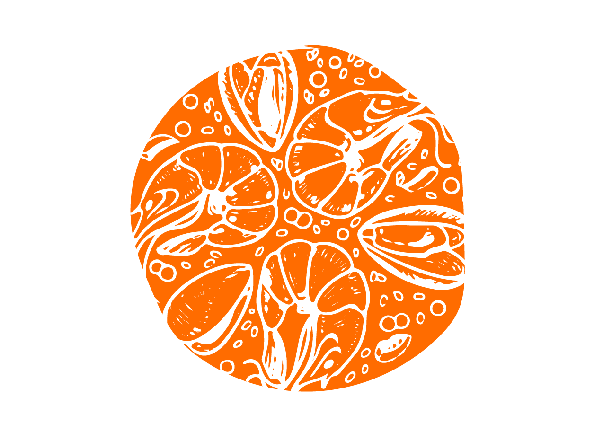

Recipe
Ingredients Prep:
- Preheat the grill to medium heat.
- Dice all the vegetables and set aside in a separate container.
- Slice sausage into half-inch rings and set aside in a separate container.
- Place the saffron in a foil envelope and place it on the skillet for no more than 30 sec,
- then remove and allow it to cool.
- Rinse and pat dry all seafood. Remove any shells or unwanted areas.
- Slice squid head into rings and set aside in a separate container.
Grilling Prep:
- When the grill is preheated, place the pan inside.
- Once the pan is hot, add butter and oil, then garlic & onion when soft.
- When fragrant, around 10min, move all to one side and sauté the sausage.
- Remove sausage and set aside once both sides are slightly brown.
- Add rice and simmer for 2-5min, mixing occasionally.
Arrangement:
- Start adding the stock progressively & season with salt and pepper.
- Once it starts boiling, place the seafood in an orderly and cylindrical pattern.
- Sprinkle fresh or frozen peas generously on top.
Simmer & Enjoy!
- Cook at low-medium for 15min, then place sausage slices back in.
- Cook at low-medium for an additional 15-45min. This will depend on the
- pan size and grill temperature.
- Remove when crispy on the bottom or water has stopped boiling.
- Serve with lemon slices, parsley, & a touch of olive oil.
- Share and Enjoy!